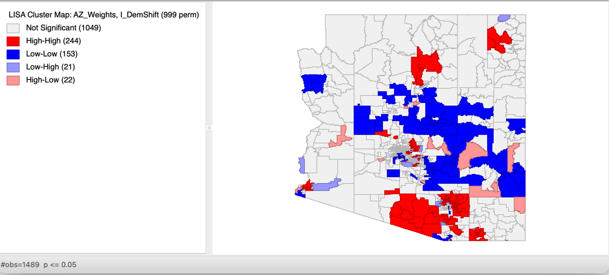
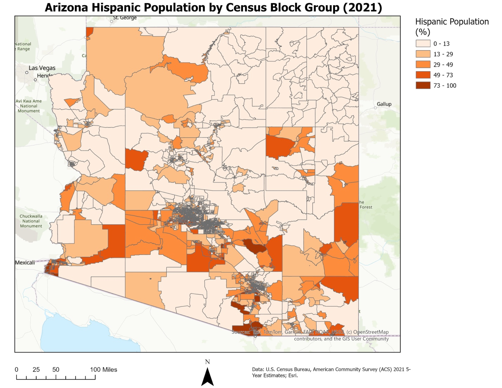
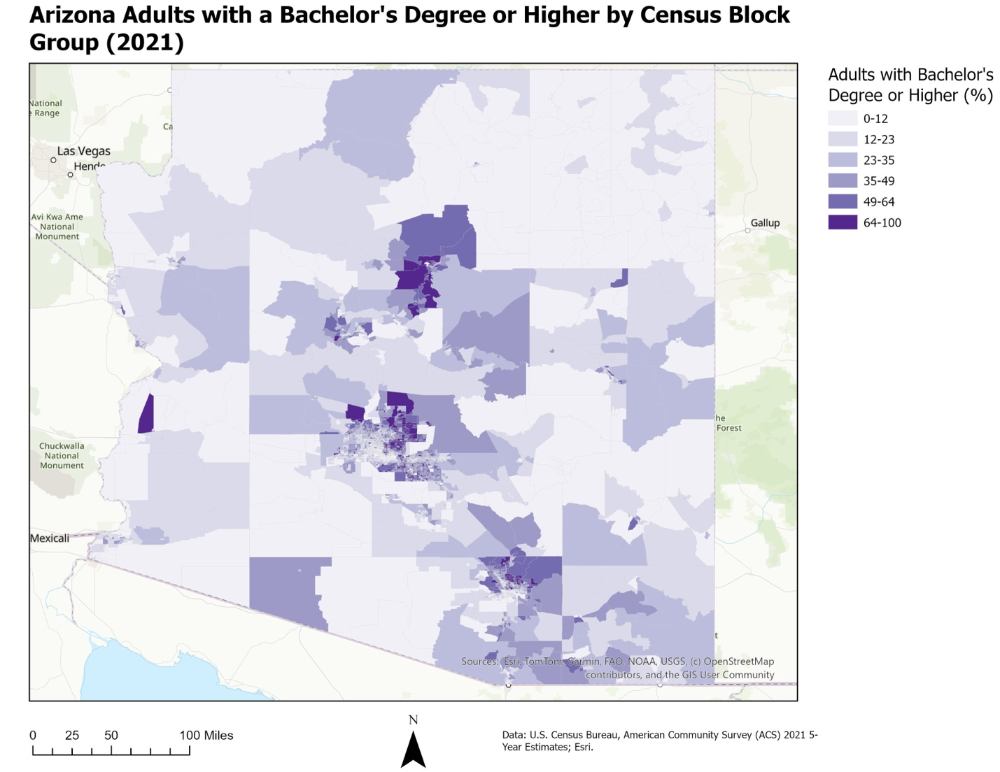
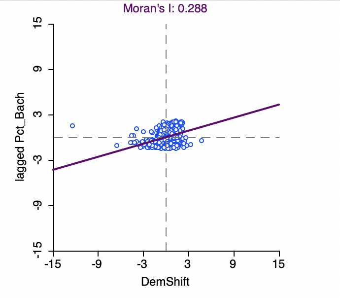

The Challenge
Arizona has undergone substantial demographic and political change in recent years. This project examined whether changes in Democratic support between the 2018 U.S. Senate election and 2020 Presidential election formed identifiable geographic patterns and whether those changes were spatially related to demographic characteristics.
The analysis focused on three demographic variables: educational attainment, Hispanic population percentage, and median household income. Election results were combined with demographic data from the 2021 American Community Survey to investigate how electoral and socioeconomic patterns varied across Arizona.

Change in Democratic vote share by Arizona precinct between the 2018 U.S. Senate and 2020 Presidential elections.
The Approach
Election results were joined to Arizona precinct boundaries in ArcGIS Pro. Democratic vote shift was calculated by comparing Democratic margins between the two elections. Positive values represented movement toward the Democratic candidate, while negative values indicated movement toward the Republican candidate.
Because American Community Survey demographic data were available at the census block-group level rather than the election-precinct level, ArcGIS Pro's Apportion Polygon tool was used to estimate demographic characteristics within precinct boundaries.
Spatial statistical analysis was then conducted in GeoDa using Queen contiguity spatial weights. The analysis incorporated:
- Global Moran's I to measure overall spatial autocorrelation
- Local Indicators of Spatial Association (LISA) to identify statistically significant local clusters
- Bivariate Moran's I to evaluate spatial relationships between electoral change and demographic variables
- Bivariate LISA to identify localized spatial relationships
- 999 random permutations to evaluate statistical significance
Geographic Patterns of Electoral Change
Democratic vote shifts were not distributed uniformly across Arizona. Democratic support remained concentrated around metropolitan Phoenix and Tucson, while Republican candidates continued to perform strongly across much of rural Arizona. Some of the largest Democratic gains occurred within suburban Maricopa County.
Democratic vote shift produced a Global Moran's I of 0.405, indicating moderate positive spatial autocorrelation. Precincts experiencing similar changes in Democratic support therefore tended to occur near one another rather than being randomly distributed across the state.

LISA cluster analysis identifying statistically significant geographic concentrations of Democratic vote shifts.
Demographic Spatial Patterns
Hispanic Population
Hispanic population exhibited the strongest overall geographic clustering among the demographic variables, with a Global Moran's I of 0.784. Higher Hispanic population percentages were concentrated along Arizona's southern border and within portions of metropolitan Phoenix and Tucson.

Educational Attainment
Educational attainment also demonstrated very strong spatial clustering, with a Global Moran's I of 0.750. Higher percentages of adults holding bachelor's degrees were concentrated primarily within metropolitan Phoenix and Tucson, while lower educational attainment predominated across much of rural Arizona.

Median Household Income
Median household income exhibited moderate positive spatial autocorrelation, with a Global Moran's I of 0.415. Higher-income areas were concentrated primarily within metropolitan Phoenix and portions of Tucson.
Connecting Demographics and Electoral Change
The final stage of the project used Bivariate Moran's I to determine whether changes in Democratic support were spatially associated with demographic characteristics in neighboring precincts.
- Educational Attainment: +0.288 — strongest positive spatial relationship with Democratic vote shifts
- Median Household Income: +0.124 — weaker positive spatial relationship
- Hispanic Population: −0.208 — negative spatial relationship
All three bivariate relationships were statistically significant with permutation p-values of 0.001.
Educational attainment emerged as the demographic characteristic most strongly associated with the geography of Democratic vote gains. Precincts experiencing larger Democratic shifts tended to be located near precincts with higher levels of bachelor's degree attainment. Median household income exhibited a weaker positive relationship, while Hispanic population exhibited a statistically significant negative spatial relationship.

Why Spatial Statistics Mattered
One of the project's most important findings demonstrated the difference between visual map comparison and formal spatial analysis. The thematic maps appeared to show geographic overlap between Democratic gains and areas with larger Hispanic populations. However, Bivariate Moran's I revealed a negative spatial relationship.
This difference occurs because Bivariate Moran's I compares the value of one variable within a precinct with the spatially lagged values of another variable in neighboring precincts. The result demonstrates why spatial statistics can reveal geographic relationships that are not apparent through visual map comparison alone.
Key Findings
-
Democratic Vote Shift — Moran's I: 0.405
Electoral change exhibited moderate geographic clustering. -
Hispanic Population — Moran's I: 0.784
This variable exhibited the strongest univariate spatial clustering in the analysis. -
Educational Attainment — Moran's I: 0.750
Educational attainment demonstrated very strong geographic clustering. -
Education × Democratic Shift — Bivariate Moran's I:
+0.288
Educational attainment exhibited the strongest positive spatial relationship with Democratic vote gains.
Overall, the analysis demonstrates that Arizona's recent electoral change has a clear geographic structure. Demographic characteristics are themselves strongly clustered, but their relationships with changes in Democratic support vary considerably across the state.